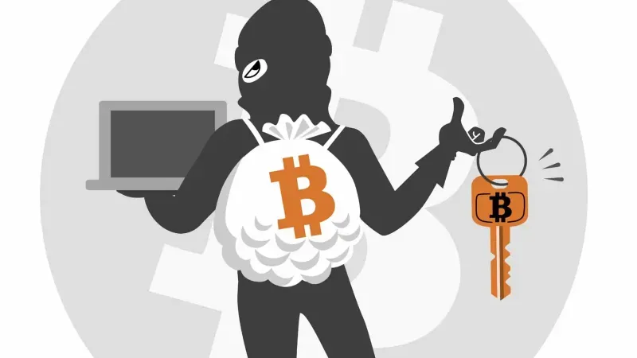
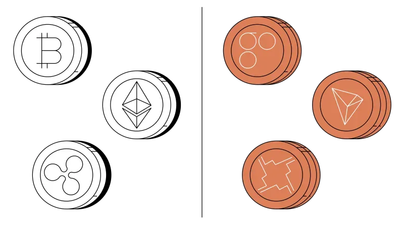
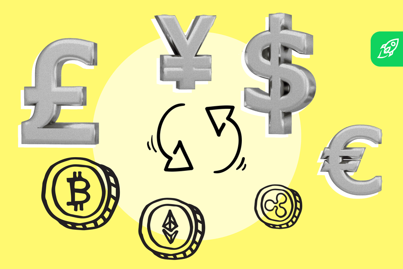

Cómo evitar estafas con criptomonedas (TIPS Clave)  En este artículo te brindamos algunos consejos para mantenerte seguro y proteger tus inversiones de posibles estafas. Ver Noticia Completa
¿Cómo sacar el dinero cuando compras criptomonedas?  Si ya tienes criptomonedas o estás pensando involucrarte en este mercado y no sabes cómo pasar de cripto a dinero fiat este artículo te interesa. Ver Noticia Completa
¿Cuáles son las diferencias entre criptomonedas vs tokens?  Aunque solemos usar ambos términos indistintamente para referirnos a todas las criptomonedas hay matices entre ambos conceptos y es importante que los tengas en cuenta. Ver Noticia Completa